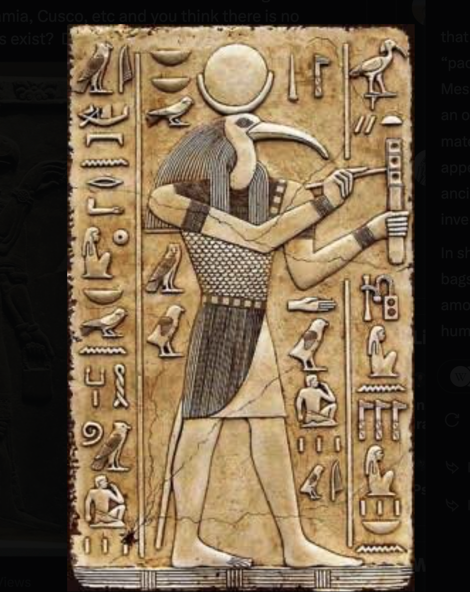
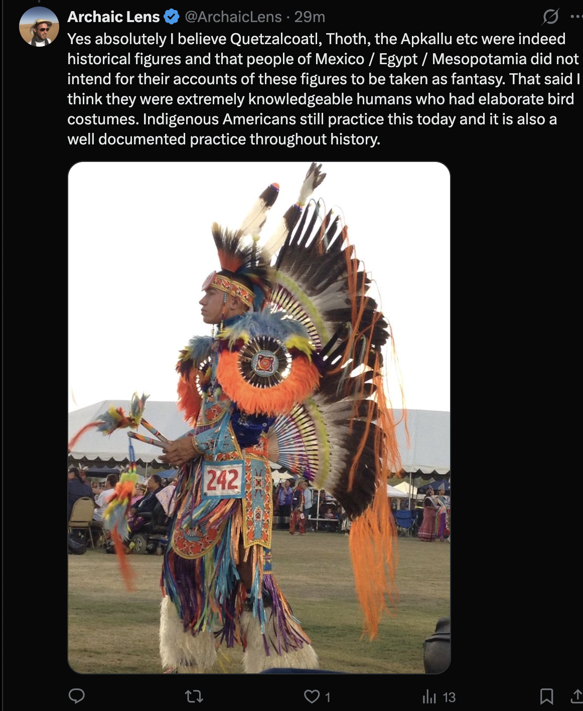

A useful control
The modern Gilgamesh.
The lion-holder at Sydney was unveiled in 2000. An ancient-looking image can preserve a modern connection. University archive
68 files accounted for. Missing comparisons are now recorded; source verification remains open where the evidence is thin.
The lion-holder at Sydney was unveiled in 2000. An ancient-looking image can preserve a modern connection. University archive
Two panels of the “Coincidence?” montage repeat Monument 19. Its Olmec identity replaces the conflicting regional labels; the Egyptian and Māori panels remain untraced.
“Accounted for” includes unresolved fragments, extra views and contextual arguments. AI planning drafts are preserved as proposals, not source verification.
| Supplied file | Where it is captured |
|---|---|
| G2ton0sW4AAvNeJ.jpegcatalogued | Birdmen across two worlds A bird, a hand, a rounded form Additional view of the registered Orongo boulder; dark line emphasis is unresolved. |
| G2ton0wWsAAAUG8.jpegcatalogued | Birdmen across two worlds A bird, a hand, a rounded form Detail of the registered Pillar 43. |
| GyOrhvIWEAANDih.jpegcatalogued | Two animals, two uncertain captions Museum animal already registered with identity unresolved. |
| GyOrl3JWQAA4Z2k.jpegcatalogued | Two animals, two uncertain captions Lingjiatan caption lead already registered; caption is not independent verification. |
| GyOru5ObUAEerOZ.jpeglead recorded | Animal images still to separate Mapped to the linked intake lead(s); unresolved identities remain explicit. |
| GyOtfJvWEAARt4O.jpeglead recorded | Animal images still to separate Mapped to the linked intake lead(s); unresolved identities remain explicit. |
| HR2iM6gbYAId30i.jpegcatalogued | Bird-headed attendants across traditions Gate of the Sun now registered as its own object. |
| HR8a1UQWYAMKmRJ.jpeglead recorded | Faces within birdlike masks Mapped to the linked intake lead(s); unresolved identities remain explicit. |
| HR8a1UvaIAAYYKT.jpeglead recorded | Faces within birdlike masks Mapped to the linked intake lead(s); unresolved identities remain explicit. |
| HR8a1UvacAANypP.jpeglead recorded | Faces within birdlike masks Mapped to the linked intake lead(s); unresolved identities remain explicit. |
| HR9-AR_XwAMVrSt.jpeglead recorded | Staff holders and “masters of animals” Mapped to the linked intake lead(s); unresolved identities remain explicit. |
| HSWTVsSWMAAp-sG.jpeglead recorded | A lion-holder with a modern afterlife Mapped to the linked intake lead(s); unresolved identities remain explicit. |
| HSoBoZ3awAAjXof.jpeglead recorded | Egypt, Mexico and a Māori-labelled drawing Mapped to the linked intake lead(s); unresolved identities remain explicit. |
| Screenshot 2026-09-03 at 5.41.56 AM.pngcatalogued | Figures within serpentine worlds Proposing Jiroft–La Venta comparison already registered. |
| Screenshot 2026-09-03 at 5.42.07 AM.pngunresolved | Context record 84 × 80-pixel fragment. Too little context to identify or assign a comparison. |
| Screenshot 2026-09-03 at 5.42.11 AM.pnglead recorded | Another bird-headed protective relief Mapped to the linked intake lead(s); unresolved identities remain explicit. |
| Screenshot 2026-09-03 at 5.42.17 AM.pnglead recorded | The Egyptian-style ibis-headed figure Mapped to the linked intake lead(s); unresolved identities remain explicit. |
| Screenshot 2026-09-03 at 5.42.22 AM.pngcatalogued | Costume or transformation? Additional view of the Cacaxtla figure. |
| Screenshot 2026-09-03 at 5.42.27 AM.pngcatalogued | Birdmen across two worlds Additional screenshot of Pillar 43. |
| Screenshot 2026-09-03 at 5.42.52 AM.pnglead recorded | Modern feather regalia in a bird-costume argument Mapped to the linked intake lead(s); unresolved identities remain explicit. |
| Screenshot 2026-09-03 at 5.43.10 AM.pnglead recorded | Four Jiroft-labelled handled objects Mapped to the linked intake lead(s); unresolved identities remain explicit. |
| Screenshot 2026-09-03 at 5.43.16 AM.pnglead recorded | Four Jiroft-labelled handled objects Mapped to the linked intake lead(s); unresolved identities remain explicit. |
| Screenshot 2026-09-03 at 5.43.22 AM.pnglead recorded | Four Jiroft-labelled handled objects Mapped to the linked intake lead(s); unresolved identities remain explicit. |
| Screenshot 2026-09-03 at 5.43.27 AM.pnglead recorded | Four Jiroft-labelled handled objects Mapped to the linked intake lead(s); unresolved identities remain explicit. |
| Screenshot 2026-09-03 at 5.44.04 AM.pnglead recorded | The circulating pillar–moai poster Mapped to the linked intake lead(s); unresolved identities remain explicit. |
| Screenshot 2026-09-06 at 6.11.46 AM.pngcatalogued | The navigator in the collage Navigator post already registered; the textual tradition remains untraced. |
| Screenshot 2026-09-10 at 5.32.43 AM.pngcatalogued | Bird-headed attendants across traditions Proposing post for the Tiwanaku bird-headed attendants. |
| Screenshot 2026-09-13 at 5.14.08 AM.pnglead recorded | San Agustín and Karahantepe · animal over a human back Mapped to the linked intake lead(s); unresolved identities remain explicit. |
| chat_1.mdlead recorded | Cusco, Jerusalem and the name Göbekli Tepe Local corpora and proposed comparison controls AI planning memo, not independent archaeological evidence. Additional centre claims and proposed control corpora are recorded as leads. |
| fenton/IMG_8503.JPGcatalogued | Another bird and rounded form Proposing bird-and-disc comparison already registered. |
| fenton/IMG_8504.PNGcatalogued | Another bird and rounded form Proposing bird-and-disc comparison already registered. |
| fenton/IMG_8505.PNGlead recorded | Kimberley bark buckets and Pillar 43 Mapped to the linked intake lead(s); unresolved identities remain explicit. |
| fenton/IMG_8506.JPGlead recorded | Kimberley bark buckets and Pillar 43 Mapped to the linked intake lead(s); unresolved identities remain explicit. |
| fenton/IMG_8507.PNGlead recorded | Body painting, tjurunga and pillar signs Mapped to the linked intake lead(s); unresolved identities remain explicit. |
| fenton/IMG_8508.JPGlead recorded | Body painting, tjurunga and pillar signs Mapped to the linked intake lead(s); unresolved identities remain explicit. |
| fenton/IMG_8509.PNGlead recorded | T-shaped headdresses and pillars Mapped to the linked intake lead(s); unresolved identities remain explicit. |
| fenton/IMG_8511.JPGlead recorded | T-shaped headdresses and pillars Mapped to the linked intake lead(s); unresolved identities remain explicit. |
| fenton/IMG_8512.PNGlead recorded | Yingarna, bags and creation Mapped to the linked intake lead(s); unresolved identities remain explicit. |
| fenton/IMG_8513.JPGlead recorded | Yingarna, bags and creation Mapped to the linked intake lead(s); unresolved identities remain explicit. |
| fenton/IMG_8514.PNGlead recorded | Lion Building graffito and Australian paintings Mapped to the linked intake lead(s); unresolved identities remain explicit. |
| fenton/IMG_8515.JPGlead recorded | Lion Building graffito and Australian paintings Mapped to the linked intake lead(s); unresolved identities remain explicit. |
| fenton/IMG_8516.PNGlead recorded | Serpent heads, yam leaves and Rainbow Serpents Mapped to the linked intake lead(s); unresolved identities remain explicit. |
| fenton/IMG_8517.JPGlead recorded | Serpent heads, yam leaves and Rainbow Serpents Mapped to the linked intake lead(s); unresolved identities remain explicit. |
| fenton/IMG_8518.PNGcontext | Context record Cereal/Djanggawul narrative and crop map. Preserved in the illustrated thread; contextual argument rather than a defined motif match. |
| fenton/IMG_8519.PNGcontext | Context record Cereal-map continuation. Preserved in the illustrated thread; contextual argument rather than a defined motif match. |
| fenton/IMG_8520.PNGcontext | Context record Ergot/beer argument and transition to seafaring. Preserved in the illustrated thread; contextual argument rather than a defined motif match. |
| fenton/IMG_8521.PNGcontext | Context record Ancient-seafaring news argument. Preserved in the illustrated thread; contextual argument rather than a defined motif match. |
| fenton/IMG_8522.JPGcontext | Context record Seafaring article image. Preserved in the illustrated thread; contextual argument rather than a defined motif match. |
| fenton/IMG_8523.PNGcontext | Context record Sunda-shelf argument. Preserved in the illustrated thread; contextual argument rather than a defined motif match. |
| fenton/IMG_8524.JPGcontext | Context record Sunda-shelf map and article. Preserved in the illustrated thread; contextual argument rather than a defined motif match. |
| fenton/IMG_8525.PNGcontext | Context record Denisovan population-history argument. Preserved in the illustrated thread; contextual argument rather than a defined motif match. |
| fenton/IMG_8526.PNGcontext | Context record Jacobs et al. paper screenshot. Preserved in the illustrated thread; contextual argument rather than a defined motif match. |
| fenton/IMG_8527.PNGcontext | Context record Australasian ancestry claim. Preserved in the illustrated thread; contextual argument rather than a defined motif match. |
| fenton/IMG_8528.PNGcontext | Context record Ancestry article and graphics. Preserved in the illustrated thread; contextual argument rather than a defined motif match. |
| fenton/IMG_8529.PNGcontext | Context record Olmec heads and ancestry claim. Preserved in the illustrated thread; contextual argument rather than a defined motif match. Sculpted facial appearance is not used to infer ancestry. |
| fenton/IMG_8530.PNGcontext | Context record Olmec-head montage. Preserved in the illustrated thread; contextual argument rather than a defined motif match. Sculpted facial appearance is not used to infer ancestry. |
| fenton/IMG_8531.PNGlead recorded | Serpent Mound and feathered-serpent imagery Mapped to the linked intake lead(s); unresolved identities remain explicit. |
| fenton/IMG_8532.PNGlead recorded | Serpent Mound and feathered-serpent imagery Mapped to the linked intake lead(s); unresolved identities remain explicit. |
| fenton/IMG_8533.PNGcontext | Context record Population bottleneck argument. Preserved in the illustrated thread; contextual argument rather than a defined motif match. |
| fenton/IMG_8534.PNGcontext | Context record Bottleneck continuation. Preserved in the illustrated thread; contextual argument rather than a defined motif match. |
| fenton/IMG_8535.PNGcontext | Context record Bottleneck composite. Preserved in the illustrated thread; contextual argument rather than a defined motif match. |
| fenton/Screenshot 2026-09-10 at 4.43.40 AM.pnglead recorded | The “V-neck” comparison Mapped to the linked intake lead(s); unresolved identities remain explicit. |
| rongo/chat_1.mdcatalogued | Two unread scripts Script comparison or its supplied AI planning discussion. Proposed controls and numerical claims require their own source checks. |
| rongo/chat_2.mdcatalogued | Two unread scripts Script comparison or its supplied AI planning discussion. Proposed controls and numerical claims require their own source checks. |
| rongo/claim_1.pngcatalogued | Two unread scripts Script comparison or its supplied AI planning discussion. Proposed controls and numerical claims require their own source checks. |
| rongo/claim_2.pngcatalogued | Two unread scripts Script comparison or its supplied AI planning discussion. Proposed controls and numerical claims require their own source checks. |
| rongo/research_1.mdcatalogued | Two unread scripts Other proposed rongorongo affinities Script comparison or its supplied AI planning discussion. Proposed controls and numerical claims require their own source checks. |
| rongo/research_2.mdcatalogued | Two unread scripts Script comparison or its supplied AI planning discussion. Proposed controls and numerical claims require their own source checks. |
The seven headings mix countries and huge regions. Similar flanking layouts do not establish that every figure holds animals or two staffs. Repeated views may occur.

Next: Identify each panel against a collection or excavation record; compare held animals, staffs and free-standing attendants separately.
| Panel | Caption / lead | Object match |
|---|---|---|
| r1-c1 | Bolivia | Gate of the Sun · frieze |
| r1-c2 | Peru | Identity open |
| r1-c3 | Costa Rica | Identity open |
| r1-c4 | “Columbia” (caption spelling) | Identity open |
| r1-c5 | Indo-Pacific | Identity open |
| r1-c6 | Egypt | Identity open |
| r1-c7 | Mediterranean | Identity open |
| r2-c1 | Bolivia | Identity open |
| r2-c2 | Peru | Identity open |
| r2-c3 | Costa Rica | Identity open |
| r2-c4 | “Columbia” (caption spelling) | Identity open |
| r2-c5 | Indo-Pacific | Identity open |
| r2-c6 | Egypt | Identity open |
| r2-c7 | Mediterranean | Identity open |
| r3-c1 | Bolivia | Identity open |
| r3-c2 | Peru | Identity open |
| r3-c3 | Costa Rica | Identity open |
| r3-c4 | “Columbia” (caption spelling) | Identity open |
| r3-c5 | Indo-Pacific | Identity open |
| r3-c6 | Egypt | Identity open |
| r3-c7 | Mediterranean | Identity open |
Figures, staffs & flanking animals
The two locations are the poster’s attributions. Object numbers, photo credits, dates and original contexts have not been verified here.

Next: Trace both sculptures to museum or excavation records; document the creature’s position and whether the human carries or wears it.
| Panel | Caption / lead | Object match |
|---|---|---|
| left | San Agustín, Colombia · caption | Identity open |
| right | Karahantepe · caption | Identity open |
The two Mexican panels show the same Olmec monument, La Venta 19. “South America” and “Aztecs, Toltecs” mislabel it. The Egyptian “Hapi” and Māori attributions remain untraced. “Quetzalcoatl” is not a verified identification of the seated figure.

Next: Find the Egyptian object and original Māori illustration; retain the two Mexican views under one physical identity.
| Panel | Caption / lead | Object match |
|---|---|---|
| top-left | “Egyptian god Hapi” · caption | Identity open |
| top-right | La Venta Monument 19 | La Venta · Monument 19 |
| bottom-left | La Venta Monument 19 · another view | La Venta · Monument 19 |
| bottom-right | “Māori New Zealand” · caption | Identity open |
Input coverage and identification audit · La Venta Monument 19 in El Tlacuache 1199 · La Venta: archaeological site
Within a creature’s curve · Serpents & composite creatures
Three views may include the same architectural carving. No site, period or collection identity has been adopted from resemblance alone.


Next: Match the architecture and carving to a site record before splitting these into separate objects.
Birds & human forms · Within a creature’s curve
The left figure is Sydney’s modern Gilgamesh, unveiled in 2000. The right is an Assyrian hero type; its exact Louvre accession needs image matching. This is a useful modern reception control, not an independent ancient Australian parallel.

Next: Trace the modern artist’s sources and identify the particular Assyrian relief.
Input coverage and identification audit · Gilgamesh at the University of Sydney
Figures, staffs & flanking animals
The image resembles Thoth iconography. It has no object identifier or provenance; a modern reproduction remains possible.

Next: Find the original object or maker before assigning an ancient date.
Bucket, cone and bird-headed figure are visible. It is not assumed to be the Met panel already registered.

Next: Identify the museum relief and attach this image to its correct object.
Birds & human forms · Handled forms
The post proposes that bird figures represent costumed people. A modern performance photograph does not identify the meaning of an ancient carving; community and event are unverified.

Next: Trace the photograph and relevant community interpretation.
The screenshots extend the single Jiroft record with several designs. Their caption’s “3000 BC” is not an independently checked date; exact provenance and authenticity remain open.


Next: Match each design to an inventory and find context; establish whether any image repeats the existing record.
Handled forms · Figures, staffs & flanking animals · Serpents & composite creatures
Fenton compares a bark bucket with the pillar’s upper forms. The ethnographic excerpt appears to concern Wunambal country in the Kimberley, not the Arnhem Land painting’s context.

Next: Verify the publication page and illustration, then record the container separately from the pillar’s uncertain interpretation.
Input coverage and identification audit · Preserved Fenton comparison thread
The archive traces the body-painting print to Wellcome 21428i; the pillar numbers and sacred-object collection remain untraced. The proposed relation is geometric, not a demonstrated common meaning.

Next: Consult the underlying collection records and appropriate community scholarship before coding the symbols.
Input coverage and identification audit · Preserved Fenton comparison thread · Supplied-image identity register
Photographs resemble early Arrernte ceremony records, but the exact plates and rock painting remain unidentified. They are not evidence for a single Australian cultural unit.

Next: Identify the plates, communities and painting; compare outline separately from use.
Input coverage and identification audit · Preserved Fenton comparison thread · Supplied-image identity register
The archive identifies the Injalak Hill painting and reports scholarship placing it among recent, post-contact paintings. It cannot be assigned the pillar’s Neolithic age.

Next: Follow the local interpretation and earliest documentation; separate the painting’s age from the age of the tradition.
Input coverage and identification audit · Preserved Fenton comparison thread · Supplied-image identity register
Handled forms · Squatting & birthing figures · Serpents & composite creatures
The excavation description treats the squatting figure as a later graffito. Two Australian paintings remain unidentified; “birthing” is a proposed interpretation.

Next: Identify and date each depicted surface independently.
Input coverage and identification audit · Preserved Fenton comparison thread · Supplied-image identity register
One of four carvings is recognisable on Pillar 43; the other identities are unresolved. The yam-leaf analogy and shared-meaning proposal need separate tests.

Next: Identify the carvings, then compare literal head outlines against local snake and plant imagery.
Input coverage and identification audit · Preserved Fenton comparison thread · Supplied-image identity register
Serpents & composite creatures
The thread compares a landscape monument with several creature images. The montage’s stone head and paintings remain unidentified; it is not a set of dated equivalent objects.

Next: Separate the mound, sculpture and paintings; obtain excavation and image sources for each.
Input coverage and identification audit · Preserved Fenton comparison thread · Supplied-image identity register
Serpents & composite creatures
Fenton compares the Pillar 43 bird’s neck pattern with Urfa Man’s collar. The archive preserves the claim; the bird’s identity as a dressed human remains disputed.
Next: Compare the actual neck marks, local birds and local collars without assuming a shared garment.
Input coverage and identification audit · Preserved Fenton comparison thread · The pillar, the moai and the bird: source dossier
The architectural photograph and multi-object montage were in the atlas but absent from the catalogue. The montage cannot be coded wholesale as lizards or boars.


Next: Identify each distinct object and its original source; deduplicate repeat views.
Input coverage and identification audit · Supplied-image identity register
The moai image differs from the documented back. The supplied planning text calls it AI-generated, but its production history has not been proved. It is excluded as an archaeological photograph.
Next: Keep the poster as a presentation audit and compare only documented photographs.
Input coverage and identification audit · The pillar, the moai and the bird: source dossier
Birds & human forms · The bird & the rounded form
The supplied planning note also mentions these centre/navel associations. No specific dated witness was supplied; the modern place name is not a Neolithic inscription.
Next: Trace each naming tradition to dated sources before adding cultural attestations.
The supplied AI research draft mentions Cuna/Guna pictographs, Chinese “Yü Pei” signs, Egyptian hieroglyphs, Shang oracle-bone signs, Sumatran ship-cloths, South American systems and Rapanui kai-kai. These are unverified bibliographic leads, not accepted identifications or explanations.
Next: Locate the original proposing publications; add specific signs and witnesses only after source checks.
The planning note proposes Çatalhöyük, Nevalı Çori, Egyptian stelae, Izapa, Moche, Nazca, Northwest Coast crest art, Norse stones, Shang bronzes and Etowah plates, alongside already registered Assyrian, Australian and Cahokia material. These suggestions are not a completed corpus or evidence of independent invention.
Next: Select bounded, documented corpora before collecting similarity scores.
{kind=link}
{kind=link}
{kind=link}
{kind=link}
{kind=link}
{kind=link}
{kind=link}
{kind=link}
{kind=link}
{kind=link}
{kind=link}
{kind=link}
{kind=link}
{kind=link}
{kind=link}
{kind=link}
{kind=link}
{kind=link}
{kind=link}
{kind=link}
{kind=link}
{kind=link}
{kind=link}
{kind=link}
{kind=link}
{kind=link}
{kind=link}
{kind=link}
{kind=link}
{kind=link}
{kind=link}
{kind=link}
{kind=link}
{kind=link}
{kind=link}
{kind=link}
{kind=link}
{kind=link}
{kind=link}
{kind=link}
{kind=link}
{kind=link}
{kind=link}
{kind=link}
{kind=link}
{kind=link}
{kind=link}
{kind=link}
{kind=link}
{kind=link}
{kind=link}
{kind=link}
{kind=link}
{kind=link}
{kind=link}
{kind=link}
{kind=link}
{kind=link}
{kind=link}
{kind=link}
{kind=link}
{kind=link}
{kind=link}
{kind=link}
{kind=link}